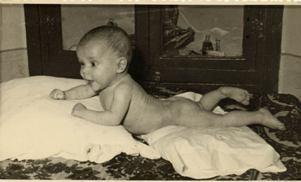

Jesús Gómez García
Jesús Gómez García 

This page is within a frameset. View the entire genealogy report of Gómez García families, or surname index of Gómez García pedigrees or report summary of Gómez García heritage from "Árbol Genealógico de Manolo y Amalia".
Genealogy Research.
© 2006 GenoPro Inc. All Rights Reserved.